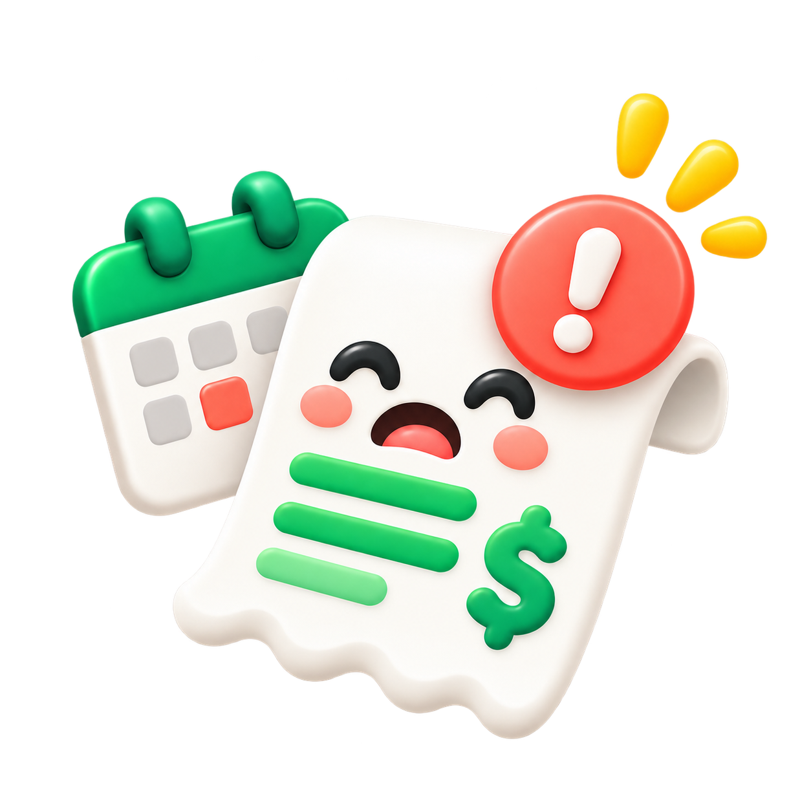
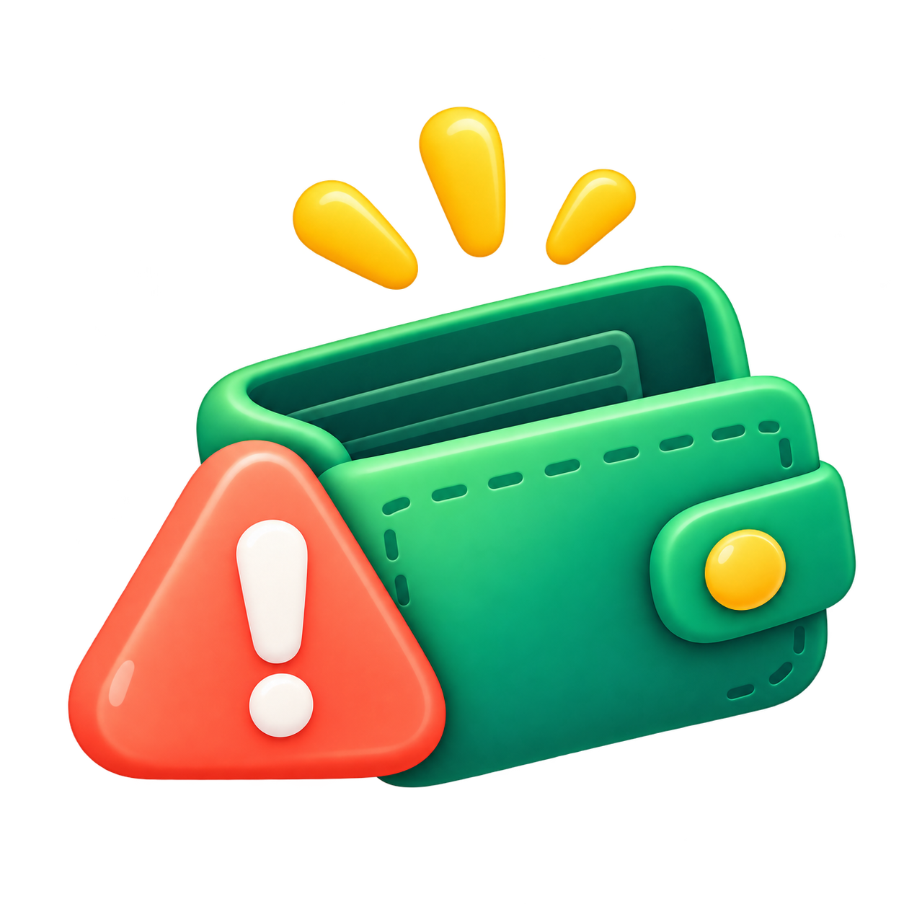
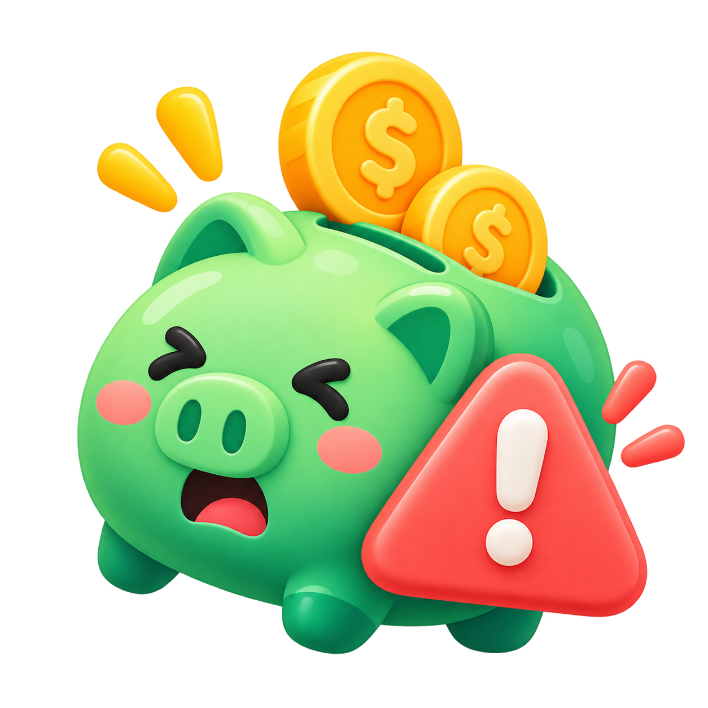
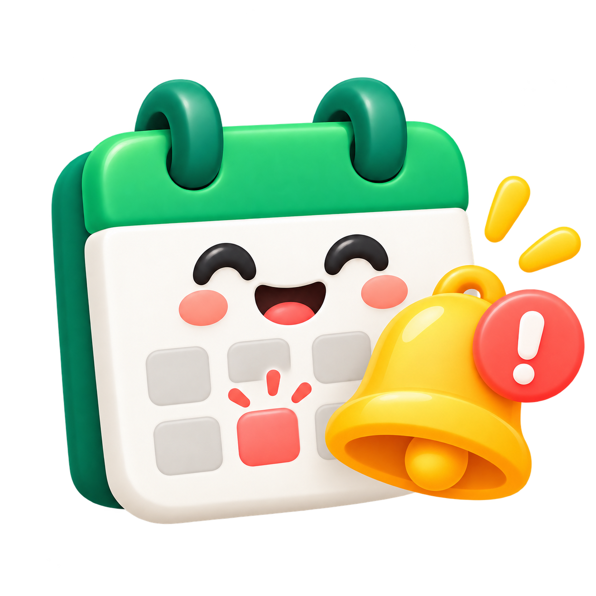
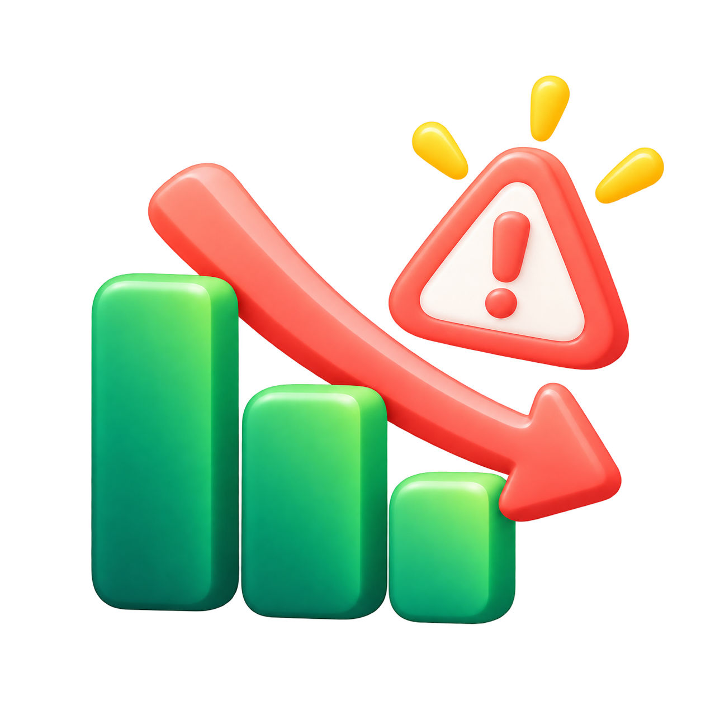
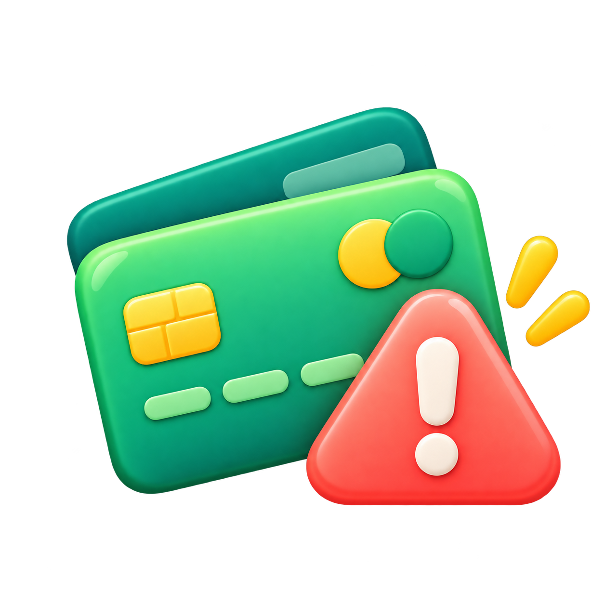
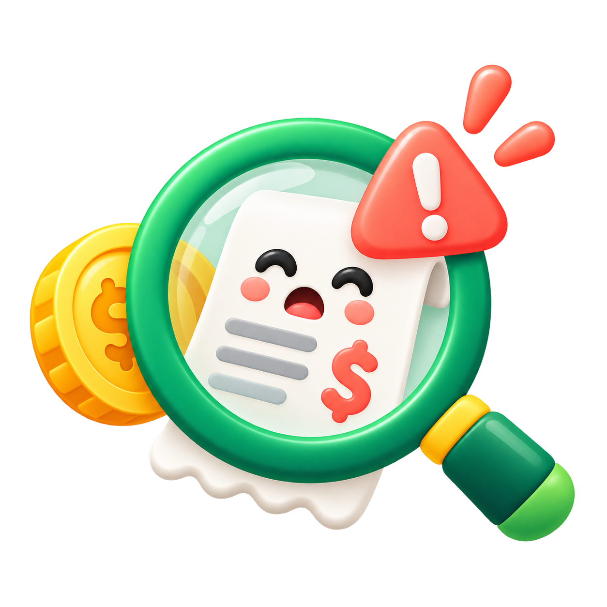
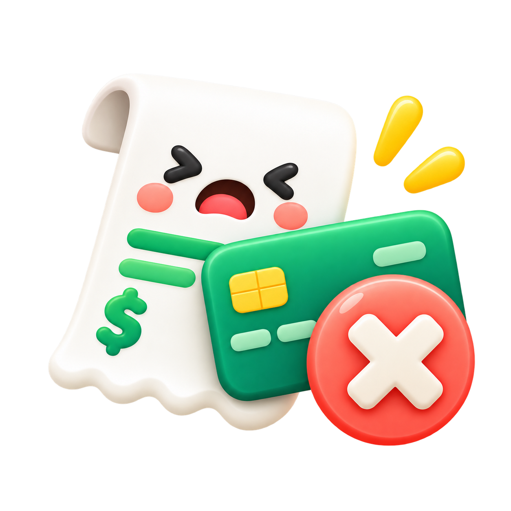

Mascote workspace
Para boas-vindas, onboarding, home e estados positivos.
assets/illustrations/mascot-workspace.png
Uma identidade leve, simpática e confiável para um sistema financeiro que precisa reduzir ansiedade, explicar o dinheiro com clareza e ainda manter o uso agradável no dia a dia.
Estas são as versões oficiais para uso digital. O símbolo mantém o DNA visual da Kodey e acrescenta a seta de crescimento do Kontabs. O menu lateral, os exemplos e os previews desta página já foram corrigidos para usar somente essas artes.
Mantenha um respiro mínimo ao redor do símbolo equivalente a 20% da largura da arte. Nunca encoste o logo em bordas, cartões ou blocos de cor sem margem.
O sistema deve parecer leve e confiável. O verde é dominante, os neutros claros dão respiro e o amarelo/coral entram como acentos emocionais e sinais de atenção.
#0E5A4F#0F7A4A#22C55E#D1F2E0#FACC15#FF7A6B#FFF9EE#14352FOs títulos devem soar acolhedores, não infantis. Recomendação: Nunito ou Nunito Sans para títulos e Inter para interfaces, números, tabelas e formulários.
Display / títulos — usar frases curtas, calorosas e claras.
“R$ 430 ainda estão sem destino.”
“Você já pagou 8 das 12 contas deste mês.”
“Há 2 alertas que merecem sua atenção.”
Body / UI — 14 a 18 px, pesos 400–700, alto contraste.
Centralize tudo em variáveis ou theme tokens. O dev não deve espalhar cores, raios e sombras diretamente nos componentes.
10 / 16 / 24 / 32px
Cards, modais e badges devem ser suaves e arredondados.
4 / 8 / 12 / 16 / 24 / 32 / 48 / 64
Base 4 px.
0 12px 34px rgba(14,90,79,.12)
Sombras suaves, com tom esverdeado.
Exemplos visuais de botões, alertas, cartões, KPIs e padrões de leitura financeira.
Essas imagens ajudam a deixar o produto mais humano e menos pesado. Use em empty states, onboarding, cards promocionais, dashboards e ajuda contextual.
Para boas-vindas, onboarding, home e estados positivos.
assets/illustrations/mascot-workspace.png
Sucesso, ganho, cashback, rendimento.
assets/illustrations/coin-happy.png
Pagamentos, saldos, contas e carteiras digitais.
assets/illustrations/wallet-green.png
Despesas, comprovantes, extratos, contas.
assets/illustrations/receipt-happy.png
Investimentos, metas, projeções e evolução.
assets/illustrations/chart-growth.png
Todos os ícones abaixo seguem a linguagem cartoon/3D da marca e podem ser usados em listas de pendências, cards de risco, notificações, empty states e painéis financeiros.

Use em contas a pagar, boletos e urgências de vencimento.
assets/alerts/alert-bill-due.png
Use para saldo baixo, caixa zerando ou limite curto.
assets/alerts/alert-wallet-empty.png
Ideal para excesso de gastos e meta ameaçada.
assets/alerts/alert-budget-piggy.png
Agendamentos, próximos pagamentos e rotina mensal.
assets/alerts/alert-calendar-reminder.png
Comparativos negativos, queda de margem e performance.
assets/alerts/alert-chart-down.png
Auditoria, antifraude, análise manual e investigação.
assets/alerts/alert-fraud-check.png
Erro em cobrança, cartão recusado ou baixa não concluída.
assets/alerts/alert-payment-failed.png
Fatura, cartão, limite, dados inválidos e revisão.
assets/alerts/alert-payment-cards.pngEstas regras ajudam a manter consistência visual e evitar exagero de ilustração numa interface que também precisa ser funcional.
• Use os ícones como reforço visual de cards e estados.
• Prefira 1 ilustração principal por bloco.
• Combine com fundo claro e muito espaço em branco.
• Use alertas mais coloridos apenas quando houver de fato algo importante para revisar.
• Redimensione proporcionalmente e preserve transparência.
• Não empilhe várias ilustrações grandes no mesmo card.
• Não use alerta vermelho em todo lugar, para não banalizar urgência.
• Não misture estes assets com outras bibliotecas de estilo diferente.
• Não recorte o logo manualmente nem altere o símbolo.
Comece o front-end com estes tokens e use os caminhos dos assets locais conforme a biblioteca acima.
:root {
--kk-green-700: #0E5A4F;
--kk-green-600: #0F7A4A;
--kk-green-500: #22C55E;
--kk-mint-100: #D1F2E0;
--kk-cream: #FFF9EE;
--kk-yellow: #FACC15;
--kk-coral: #FF7A6B;
--kk-ink: #14352F;
--kk-radius-md: 16px;
--kk-radius-lg: 24px;
--kk-shadow-md: 0 12px 34px rgba(14,90,79,.12);
}
// Exemplos de assets
assets/logos/logo-horizontal.png
assets/logos/logo-mark.png
assets/logos/app-icon.png
assets/illustrations/*.png
assets/alerts/*.png✓ A ação principal está evidente?
✓ Os números são compreensíveis sem depender só de cor?
✓ O texto é humano e direto?
✓ O cartoon está ajudando e não poluindo?
✓ A versão correta do logo está sendo usada?
✓ Os assets estão em resolução adequada?
Preferir: “Você tem R$ 430 sem destino.”
Evitar: “Seu orçamento está errado.”
Preferir: “Este pagamento precisa de revisão.”
Evitar: “Falha crítica no sistema.”